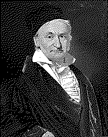

| годы жизни | 1777–1855 |
| страна | Германия · Брауншвейг |
| область | теория чисел · статистика · геодезия · астрофизика |
| главное | Disquisitiones Arithmeticae · МНК · нормальное распределение |
| характер | перфекционист · публиковал только законченное |
Принц математики не любил публиковаться.
в 18 лет — 17-угольник. потом дневник на всю жизнь.
В 1796 году 18-летний Гаусс проснулся и понял как построить правильный 17-угольник1 с помощью циркуля и линейки. Это не решалось 2000 лет со времён греков. С этого дня он начал вести математический дневник.
Гаусс публиковал мало. Намеренно. «Лучше меньше да лучше» — его принцип. Каждая опубликованная работа была законченным произведением. После смерти обнаружили дневники: десятки теорем которые он доказал но не публиковал. Некоторые переоткрывали через 50–100 лет.
«Disquisitiones Arithmeticae» (1801) — в 24 года. Систематизация теории чисел. Квадратичные вычеты. Основная теорема арифметики строго доказана. Это книга которую изучают сегодня.
«Математика — царица наук, а теория чисел — царица математики.» — Карл Фридрих Гаусс
Нормальное распределение. Гаусс применил его к ошибкам измерений. Если ошибки случайны и симметричны — они распределены нормально вокруг истинного значения. Метод наименьших квадратов2: оценка параметров которая минимизирует сумму квадратов ошибок. Гаусс использовал МНК чтобы предсказать орбиту астероида Церера когда другие потеряли его из виду.
Гауссова кривая. Нормальное распределение N(μ, σ²). Гаусс не открывал её первым — де Муавр и Лаплас работали раньше. Но именно Гаусс показал её фундаментальную роль в статистике.
В последние 30 лет жизни Гаусс занимался геодезией. Измерял Землю. Буквально. Изобрёл гелиотроп — зеркало для передачи световых сигналов. Разработал метод триангуляции для картографии. И параллельно — теорию кривых поверхностей. Theorema Egregium3: кривизна поверхности — внутреннее свойство. Это предшественник общей теории относительности.
Гаусс был замкнут. Мало общался с коллегами. Не создал математической школы — в отличие от других великих. Лобачевский изобрёл неевклидову геометрию. Гаусс тоже до этого додумался — в дневниках есть записи. Но не опубликовал. Не был уверен что мир готов.